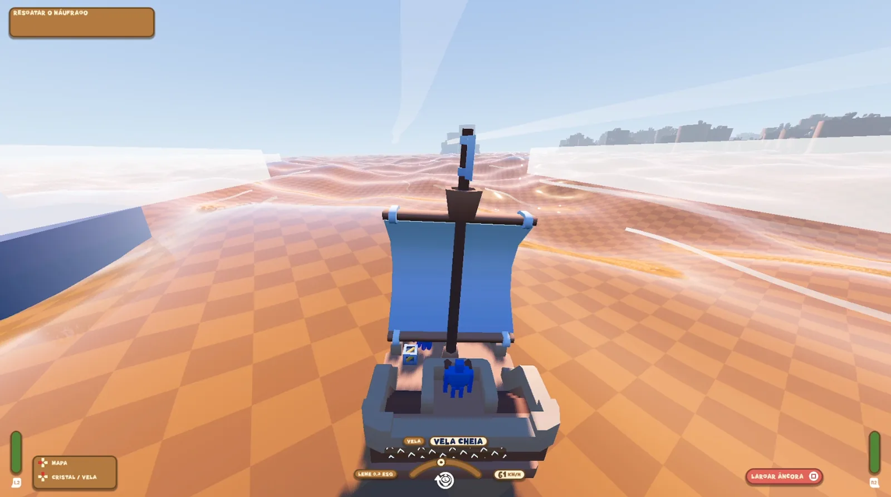
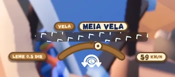

Navegar
O analógico esquerdo gira o timão e os gatilhos mexem as pás. O barco tem peso, balança na onda e responde do jeito que o mar deixa.
Um jogo de barco pelas terras oníricas de Cirrus.
Em desenvolvimento · demo a caminho

O jogo
O analógico esquerdo gira o timão e os gatilhos mexem as pás. O barco tem peso, balança na onda e responde do jeito que o mar deixa.
Meia vela, vela cheia, vela rasgada. Leia a correnteza e o vento e use os dois a seu favor.

Além da vela, um cristal empurra o barco. As peças vão chegando conforme você avança.
Entregas, resgates e circuitos de aros, com inimigos que te perseguem de arpão na mão.
O mundo
Por que eu faço o Cirrus
Eu sempre gostei de jogos de veículo, e sentia que os barcos eram muito injustiçados: os jogos deles focavam em outras coisas, e o navegar em si, o controle do barco e tudo mais acabava ficando de lado. Não queria fazer um simulador, então um jogo arcade fantasioso acabou sendo a escolha.
A ideia nasceu tentando fazer controles parecidos com os de 4x4 in a Furniture Store, só que para barco. A ambientação vem de um jogo mais antigo meu, que está engavetado por tempo indefinido.
O mundo do jogo é só um pedacinho de um projeto maior, que pouco a pouco acho que vai conseguir nascer. Um ambiente além do mundo físico, um lugar pra onde vão os que sonham acordados e os que dormem sonhando com aventuras fantásticas. Algo como uma versão minha da Terra do Nunca.
O nome veio das nuvens “rajadinhas”. Eu gostava muito da estética: me dava a impressão de que a própria nuvem tava tentando aproveitar os ventos pra ir numa aventura.
A demo é pra apresentar de leve esse mundo e levar o jogador a entender e mergulhar nos múltiplos controles que o jogo final vai ter. É um treino pra mim também, em level design e em escrita de narrativa pela gameplay.
Fazer sozinho é uma batalha monumental, tipo Sísifo empurrando a pedra. Se eu focar só no que precisa ser feito no momento, eu não fico doido.
Victor Beda
Jogar / seguir
Siga no X ou no itch.io para saber quando sair.